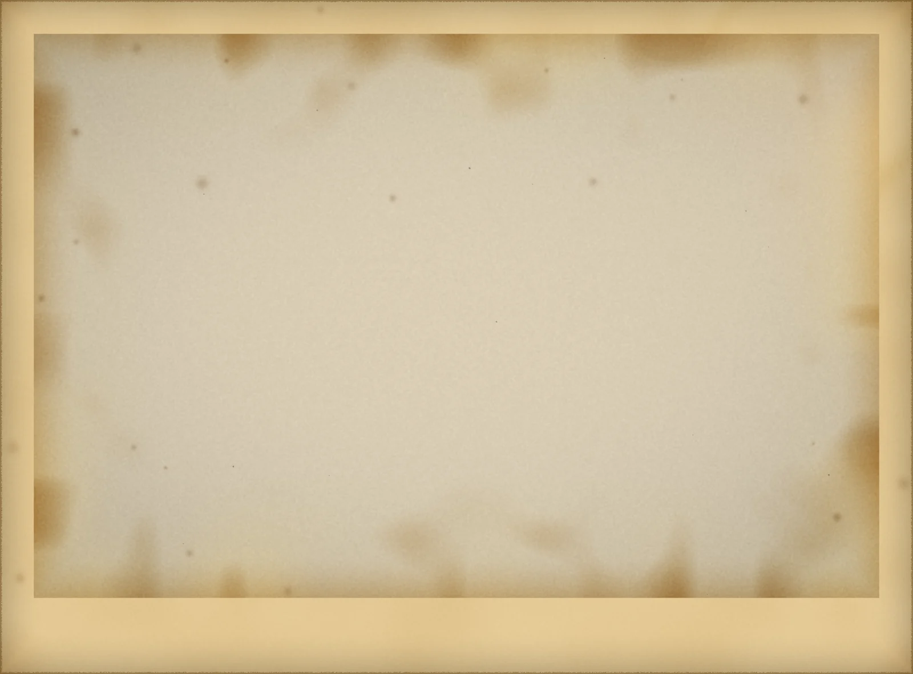
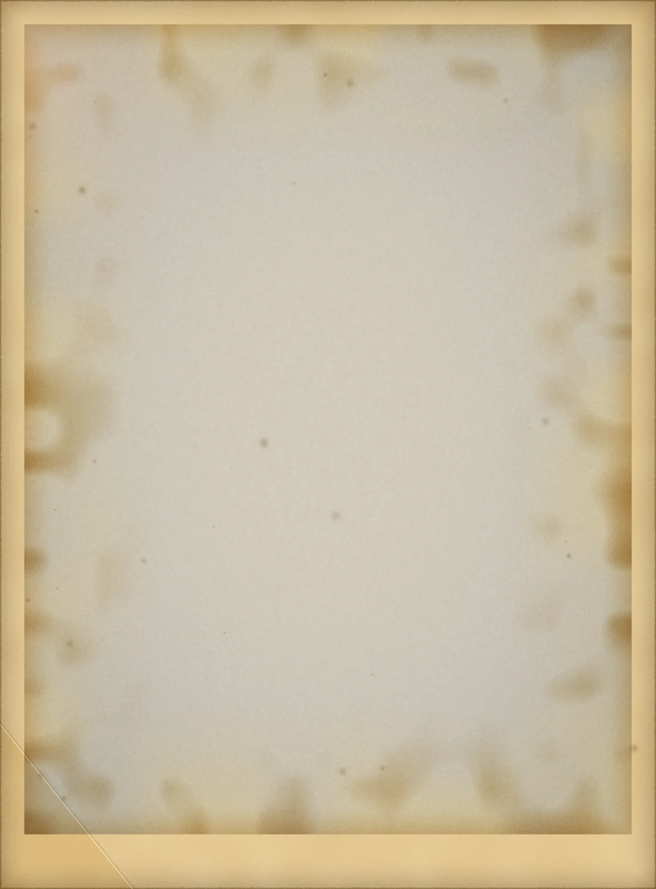
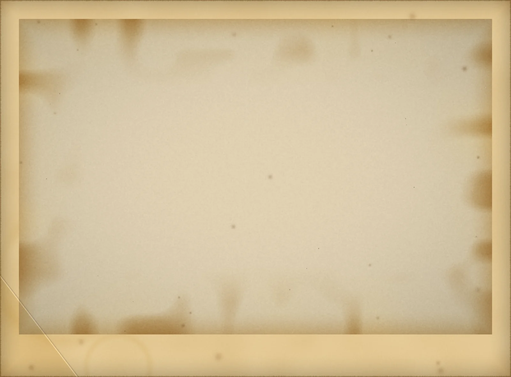
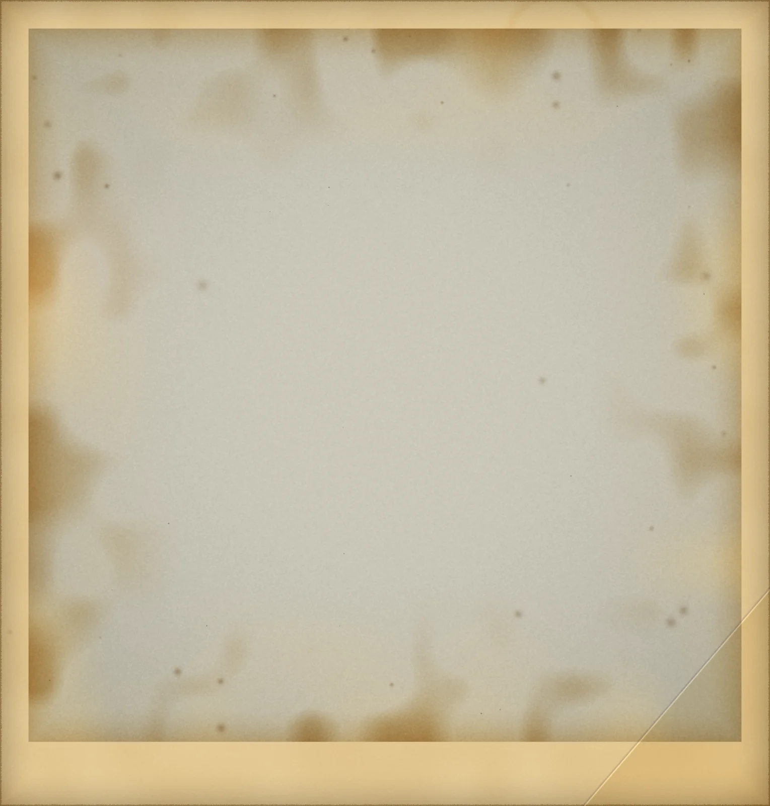
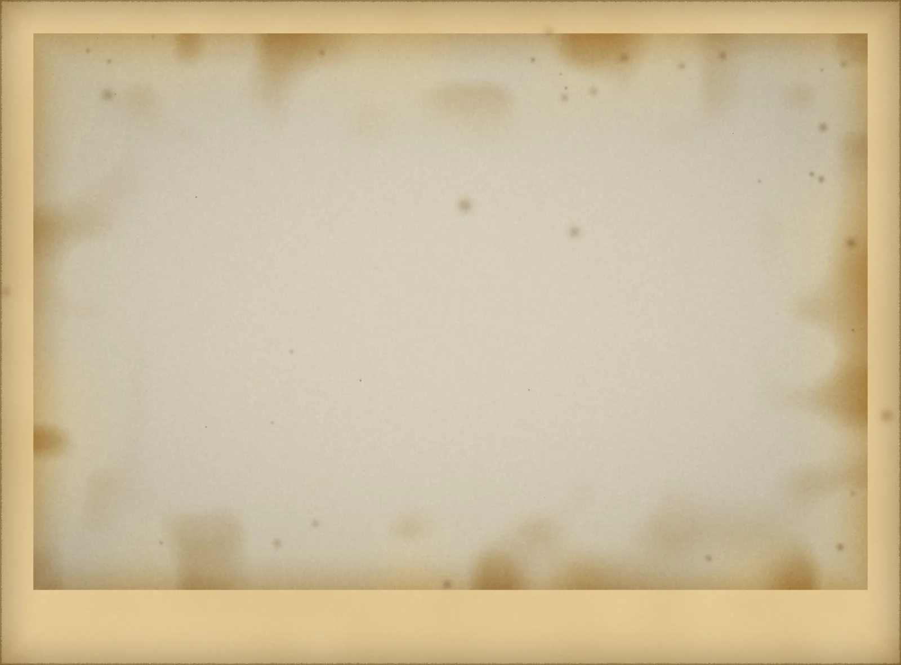

自我介绍
用两三句话介绍自己：在哪里读书或工作，研究或关心什么方向。
再写一段一路怎么走过来的：从哪个方向起步，后来转向了什么，为什么。
这台电脑里放的是简历装不下的东西：现在在做什么、一路怎么走过来、怎么想问题。论文和一份剪报在桌上，点那摞纸就能拿起来；做过的东西在右边的电视里。
One line about you: what you do, where, and what you care about.
Your device may struggle with the 3D room, so this text version is shown first.The 3D room is made for bigger screens, so phones get this text version first. Try the 3D room anyway →
A short introduction: what you are working on now, what you did before, and why it interests you.
A second paragraph can cover what you are learning, what you are looking for, or what people should get in touch about.
In the 3D room this text is typed out letter by letter on the old computer's screen.
Your Name, 21, beat teams from 40 universities with a robot arm built from spare parts and a cheap webcam.
Your Name, left, and Coauthor Name test the arm in the university's robotics lab on Monday. STAFF PHOTO
The robot on Your Name's lab bench does not look like much: an aluminium arm, a webcam and a tangle of cables held together with tape. Last week it beat entries from 40 universities to take first prize at the national undergraduate robotics competition.
“It learns a task by watching you do it twice,” said Your Name, a third-year student at Your University. “Then it tries, fails and tries again. Most of what I did was make the failing cheaper.”
The judges cited the arm's ability to pick up objects it had never seen, including a glass cup that defeated most of the field. The method behind it is described in a paper now under review at an international conference.
Advisor Name, who leads the university's robotics lab, said the project began as a summer exercise. “I gave the students a broken arm and a month,” Advisor Name said. “Your Name came back with a working robot and a list of everything that was still wrong with it.”
Not everything went to plan. In the final round the arm dropped its first object, and the team had four minutes to restart the system. “We had practised that too,” said Coauthor Name, a teammate. “Restarting was the one thing we were sure would work.”
The prize carries a research grant, which the team plans to spend on a second arm, so that two robots can practise on each other.
Your Name grew up near the old harbor, where the family ran a bicycle repair shop. “Fixing bicycles is not so different,” Your Name said. “You look at what is wrong and change one thing at a time.”
The team will show the robot at the city science museum on Saturday. Entry is free.
Continued on Page 4
Your Name built the first version of the arm in a dormitory, from a second-hand kit and a webcam taped to the wrist. The gripper was printed in the university library, where the 3-D printer is free for students before nine in the morning.
The breakthrough came in October, when the team stopped trying to make the robot succeed and started counting how it failed. “Every dropped cup told us something,” said Coauthor Name. “We just had to write it down.”
The method is simple to describe. The robot watches a person pick up an object twice, then tries on its own. Each failure is replayed in a computer simulation overnight, and by morning the robot has practised the same grasp thousands of times.
“Every dropped cup told us something.”Coauthor Name, teammate
Glass was the hardest test. Cameras that measure depth see straight through it, so most robots reach for a cup that is not where they think it is. The team's robot moves its own camera a few centimetres and compares the two views, the way a person tilts their head to judge a distance.
Advisor Name said the result surprised the department. “We have robots that cost a hundred times more,” Advisor Name said. “None of them can pick up a wine glass.”
The prize money will pay for a second arm. With two, the team hopes the robots can take turns: one sets a task, the other learns it, and then they swap.
The team has been invited to show the work at an international conference next year. Until then, the arm lives on a bench by the window of the robotics lab, where it practises every night.
Not everyone on the team studies robotics. Coauthor Name came from the physics department after a lecture on optics and wrote the simulator the robot now spends its nights in. “I had never touched a robot,” Coauthor Name said. “But I knew how light bends through glass, and that turned out to matter.”
The judges were also struck by how little the project cost. Apart from the arm and the camera, the team used parts from the lab's spare-parts drawer and free software. The full list, down to the price of every screw, is published with the paper, so that other students can build the same robot.
Advisor Name said that was deliberate. “A result that only works in a lab with a big budget is not much use to anyone,” Advisor Name said. “We wanted something a school could copy.”
Several schools have already asked. A secondary school near the harbor plans to build its own arm in the spring, with the team visiting once a month to help.
The next test will be a kitchen. “Cups are easy compared with a sink full of dishes,” Your Name said. “But that is where a robot would actually help someone.”
“It never gets bored,” Your Name added. “That is the one thing it is better at than us.”
Robotics club recruits. The student robotics club meets on Thursdays at 19:00 in the engineering building. No experience is needed; the club provides the tools and spare parts.
Lab tours on Saturday. The robotics lab opens to visitors from 14:00 to 16:00 during the museum open day. Visitors can try teaching the arm a task themselves.
Read the paper. The team's paper, with the full parts list, is on the university's website.
Replace this paragraph with your abstract. A reader who picks this printout up off the desk reads the title, this paragraph and Figure 1, and often nothing else, so give the whole paper here in five sentences: the problem, why current methods fall short, your idea, how you tested it, and the strongest result. For example: grasp planners trained on opaque objects miss transparent ones, because depth sensors see straight through them. We predict depth from two views and a short motion of the gripper, and train the planner on 40k simulated scenes. On two real-robot benchmarks the success rate on glassware rises from 41% to 78% with no loss in speed.
This page is the first page of a paper as it comes off a printer. It follows the usual two-column conference layout: a centred title block, one figure across both columns, then the abstract and the text in two justified columns of ten-point serif type. The line in the left margin is the stamp arXiv adds to every preprint; keep it once your paper is public.
Open the introduction with the task and why it matters to someone outside your lab. Then name the gap: what current methods assume, and the case where that assumption breaks. One concrete failure, like the smeared gripper in Figure 1, does more work than a paragraph of adjectives.
Next, state the key idea in a sentence that a first-year student could repeat. Say what you changed, not only what you achieved. If the method has a name, introduce it here and use the same name in every figure, table and caption, so that a reader who flips straight to Table 2 still knows which row is yours.
Close the introduction with the contributions, usually as a short list:
Give the code and data link as it will appear in print, for example github.com/your-name/your-project, so that someone holding the paper can still find it.
Group prior work by idea rather than by year. For each group, write one sentence on what it does and one on how your work differs [3, 7, 12]. Citations stay as numbers in brackets; the full list sits at the end of the paper.
Learning to grasp. Early systems matched object models to depth images [4, 9]. Learned planners [2, 15] replaced the models with networks trained on millions of grasps, but they still read depth from the same sensor, which is exactly where transparent objects fail.
Depth completion. A second line of work repairs the depth image before planning [6, 11, 18]. These methods need a clean background and several seconds per frame, which rules out the closed-loop setting we study. Our model instead treats the motion of the gripper itself as a second view, so it needs no extra camera and runs inside the control loop at the same rate as the planner.
Start the method with a short overview that matches a figure: what goes in, what comes out, and the two or three stages in between. Then give each stage its own subsection, in the same order as the figure, so that a reader can keep one finger on Figure 2 while reading.
Define every symbol the first time it appears. Given two frames I1 and I2 taken a short gripper motion T apart, the network predicts a depth map D for the first frame; training minimises the photometric error after warping one frame into the other, plus a smoothness term weighted by λ. Put the full loss in a numbered equation, and keep the numbers so that later sections can refer back to it.
State what you hold fixed and what you learn. A reviewer reading on paper cannot click through to your code, so the text alone has to be enough to rebuild the method.
Given two frames I1 and I2 and the known motion T between them, the network predicts a depth map D for the first frame. We warp I2 into the first view with D and T, and train on the photometric difference, so no ground-truth depth is needed:
Here Lsmooth penalises depth gradients where the image is flat, and λ = 0.1 in all experiments. Transparent surfaces break the photometric term, because the background moves behind them; we mask pixels whose error stays high across both directions of the warp.
The planner proposes a grasp from D, and the gripper moves 2 cm towards it before the next prediction. Each step therefore produces a new pair of frames for free, and the depth gets sharper as the gripper approaches the object.
We test on two real-robot benchmarks with 12 transparent and 20 opaque objects, 200 grasps per method and setting. A grasp counts as a success when the object is lifted 10 cm and held for three seconds.
| Method | Glass | Opaque | ms |
|---|---|---|---|
| Planner only [2] | 41.2 | 88.0 | 32 |
| Depth completion [6] | 63.5 | 86.1 | 410 |
| Two cameras [11] | 70.1 | 88.4 | 58 |
| Ours | 78.4 | 89.2 | 35 |
Table 1 gives the main result. The planner alone fails on most glassware; depth completion helps but is too slow for closed-loop control. Ours reaches 78.4% on glass at almost the planner's own speed, and does not hurt opaque objects.
Ablations. Removing the mask drops glass success to 66%; replacing the gripper motion with a fixed second camera costs 8 points, because the fixed baseline is too short at close range.
Failure cases fall into two groups: thin stems of wine glasses, which the network smooths away, and objects placed in front of a mirror, where the warp finds a consistent but wrong surface. Both appear in the supplementary video.
State what you showed and what it does not yet cover. In one paragraph: the method, the strongest number, the main limit, and the next step a reader could take. Avoid repeating the abstract word for word.
Acknowledgements. Thank the people and grants that made the work possible, and anyone who lent you a robot.
Journals in this style open with one bold summary paragraph of about two hundred words, written for any scientist rather than only for your field. Put the background in the first two sentences and the open problem in the third. Then say what you found, how you found it and why it changes what people in the field can do. Leave out abbreviations and citations here: a reader who stops after this paragraph should still be able to tell a colleague what the paper shows. Robots that learn from a few demonstrations still fail on transparent and reflective objects, which make up much of a real kitchen. Here we show that the motion of the robot's own gripper is enough to recover the missing depth, raising the success rate on glassware from 41% to 78%.
This sheet shows the opening page of a journal article in the two-column style used by Nature and similar journals. The title runs across the page in a heavy sans-serif, the authors follow, and the dates of submission and acceptance sit in the narrow margin beside the summary paragraph.
The main text then starts without a heading. Write the first paragraphs for a reader from a neighbouring field: what was known, what was missing and what you set out to test. Journals in this style number nothing in the main text; sections carry short bold headings instead.
Describe the approach in words first and keep the equations for the Methods at the end. A figure that shows the whole pipeline on one example (Fig. 1a) saves a page of description.
Report the main result with its uncertainty, for example a success rate of 78 ± 4% across five runs against 41 ± 6% for the strongest baseline (Fig. 1b), and say how many trials each number comes from.
Keep each paragraph to one point. Journals in this style cut long main texts hard, so anything a specialist needs and a general reader does not, such as hyperparameters, the full list of baselines or the hardware, goes into the Methods, where it can run as long as it needs. A reader who wants to rebuild the robot should find everything there without searching the main text.
Readers trust a paper more when it shows its limits. Name the conditions in which the method breaks, and show one example of each in the Extended Data. Our model still fails on mirrors larger than the gripper's field of view, and on objects that move while the gripper approaches them.
End the main text with what the result makes possible next, in two or three sentences, and leave the detailed comparison with earlier work to the discussion.
The same idea should carry over to any robot that can move its own camera. The next step is a robot that learns from a single demonstration recorded on a phone, which would let anyone teach it a new object at home without a depth sensor or a lab.
Finish with the limits of the claim rather than with a slogan: what you showed, on which robots, and under which lighting. Readers remember the last paragraph, so make it one they can quote accurately.
Describe the hardware so that another lab could buy or build the same setup: the arm, the gripper, the camera and where it is mounted, and the computer that runs the model. Give model numbers and the control rate, here a six-axis arm with a parallel gripper and a wrist camera at 30 frames per second.
Say where every training example comes from and how many there are. We rendered 40,000 scenes with 312 object models, a third of them transparent, under randomised lighting and backgrounds.
State what you excluded and why. Scenes in which the object was fully hidden from both views were removed before training, about 3% of the total.
| Class | Baseline | Ours |
|---|---|---|
| Cup | 44 ± 5 | 81 ± 3 |
| Bowl | 52 ± 6 | 84 ± 4 |
| Bottle | 36 ± 7 | 74 ± 5 |
| Vase | 30 ± 6 | 69 ± 6 |
Define success before the experiments, and say who judged it. A grasp counted as successful when the object was lifted 10 cm and held for 3 s; trials were scored by a person who did not know which method was running.
Report the test, the number of runs and what the error bars show. Differences between methods were tested with a two-sided paired t-test across the five runs.
Many journals ask for a separate checklist on data, code and statistics. Fill it in at submission, and keep the answers consistent with this section.
Say where the data can be downloaded and under which licence, for example a public repository with a permanent identifier. Data that cannot be shared should be named, with the reason.
Give the repository and the exact version used for the paper, for example github.com/your-name/your-project, tag v1.0.
Acknowledgements Thank people, funders and facilities.
Author contributions Y.N. designed the method and ran the experiments. C.N. built the robot setup. A.N. supervised the project. All authors wrote the paper.
Competing interests The authors declare no competing interests.
Correspondence should be addressed to Advisor Name.
Your role, then one line on what the project is and what you did in it.
Another project. The TV picture and the light in the room follow the colour of the tape.
Each tape is a short programme of chapters with subtitles, written as a JSON file.
To add a project, write another li here and a programme for it.
The one line that stands for this book, printed alone on the left page.
Highlights start on the right page, one paragraph each.
When a page is full they run on to the next: click the right page to turn forward, the left page to go back, or use ← →.
Each book holds up to 24 highlights.
data-read is when you finished it; for a book you are still reading, data-progress says how far in you are.
A book with few highlights gets a reading card under them: publisher, number of highlights, reading status.
Real covers go in assets/books/covers/ (kept out of Git); without one, a cover is drawn in the data-style.
The one line that stands for this book, printed alone on the left page.
A highlight goes here.
And another one.
The one line that stands for this book, printed alone on the left page.
The one line that stands for this book, printed alone on the left page.
The one line that stands for this book, printed alone on the left page.
The one line that stands for this book, printed alone on the left page.
A highlight goes here.
And another one.
The one line that stands for this book, printed alone on the left page.
The one line that stands for this book, printed alone on the left page.
The one line that stands for this book, printed alone on the left page.
The one line that stands for this book, printed alone on the left page.
A highlight goes here.
And another one.
The one line that stands for this book, printed alone on the left page.
The one line that stands for this book, printed alone on the left page.
The one line that stands for this book, printed alone on the left page.
The one line that stands for this book, printed alone on the left page.
A highlight goes here.
And another one.
The one line that stands for this book, printed alone on the left page.
The one line that stands for this book, printed alone on the left page.
The one line that stands for this book, printed alone on the left page.
The one line that stands for this book, printed alone on the left page.
A highlight goes here.
And another one.
The one line that stands for this book, printed alone on the left page.
The one line that stands for this book, printed alone on the left page.
The one line that stands for this book, printed alone on the left page.
The one line that stands for this book, printed alone on the left page.
A highlight goes here.
And another one.
The one line that stands for this book, printed alone on the left page.
The one line that stands for this book, printed alone on the left page.
The one line that stands for this book, printed alone on the left page.
The one line that stands for this book, printed alone on the left page.
A highlight goes here.
And another one.
The one line that stands for this book, printed alone on the left page.
The one line that stands for this book, printed alone on the left page.
The one line that stands for this book, printed alone on the left page.
The one line that stands for this book, printed alone on the left page.
A highlight goes here.
And another one.
The one line that stands for this book, printed alone on the left page.
The one line that stands for this book, printed alone on the left page.
The one line that stands for this book, printed alone on the left page.
The one line that stands for this book, printed alone on the left page.
A highlight goes here.
And another one.
The one line that stands for this book, printed alone on the left page.
The one line that stands for this book, printed alone on the left page.
The one line that stands for this book, printed alone on the left page.
The one line that stands for this book, printed alone on the left page.
A highlight goes here.
And another one.
The one line that stands for this book, printed alone on the left page.

一行说明，可以不写。

照片换成自己的：原图放 photos-src/，用 blender/age_photos.py 做旧。




The models in the desk room come from Sketchfab and Poly Haven and are used under their own licences; each entry lists the author, the original, the licence and how it was changed. The walls, desk and the remaining small objects are built with Blender scripts, and the wood grain is procedural. The rainy night outside the window is the real neighbourhood around Tokyo Tower: buildings and terrain from MLIT's PLATEAU 3D city model, streets, shops and trees from OpenStreetMap, distant facades cut from CC0 night photos; Tokyo Tower itself, the street furniture and the shop fronts are modelled by script. The 3D runs on three.js (MIT). Fonts: Cinzel, EB Garamond, Playfair Display, UnifrakturMaguntia and Caveat (SIL Open Font License).
Modified for this room: rescaled, retextured and baked into the room lighting (details in credits.json).
Modified for this room: rescaled, retextured and baked into the room lighting (details in credits.json).
Modified for this room: rescaled, retextured and baked into the room lighting (details in credits.json).
Modified for this room: rescaled, retextured and baked into the room lighting (details in credits.json).
Modified for this room: rescaled, retextured and baked into the room lighting (details in credits.json).
Modified for this room: rescaled, retextured and baked into the room lighting (details in credits.json).
Modified for this room: rescaled, retextured and baked into the room lighting (details in credits.json).
Modified for this room: rescaled, retextured and baked into the room lighting (details in credits.json).
Modified for this room: rescaled, retextured and baked into the room lighting (details in credits.json).
Modified for this room: rescaled, retextured and baked into the room lighting (details in credits.json).
Modified for this room: rescaled, retextured and baked into the room lighting (details in credits.json).
Modified for this room: rescaled, retextured and baked into the room lighting (details in credits.json).
Modified for this room: rescaled, retextured and baked into the room lighting (details in credits.json).
Modified for this room: rescaled, retextured and baked into the room lighting (details in credits.json).
Modified for this room: rescaled, retextured and baked into the room lighting (details in credits.json).
Modified for this room: rescaled, retextured and baked into the room lighting (details in credits.json).
Modified for this room: rescaled, retextured and baked into the room lighting (details in credits.json).
Modified for this room: rescaled, retextured and baked into the room lighting (details in credits.json).
Modified for this room: rescaled, retextured and baked into the room lighting (details in credits.json).
Modified for this room: rescaled, retextured and baked into the room lighting (details in credits.json).
Modified for this room: rescaled, retextured and baked into the room lighting (details in credits.json).
Map data © OpenStreetMap contributors. Used to place the buildings outside the window (beyond Minato City), the roads, street lights, trees, cafés and izakaya, and rendered into the night view.
Source: MLIT 3D City Model (Project PLATEAU), Minato City (FY2023). Modified: buildings (LOD2 roof shapes, heights, uses, storeys) and terrain converted, relit as a rainy night and rendered into the view outside the window.
Modified for this room: rescaled, retextured and baked into the room lighting (details in credits.json).
Modified for this room: rescaled, retextured and baked into the room lighting (details in credits.json).
Modified for this room: rescaled, retextured and baked into the room lighting (details in credits.json).
Modified for this room: rescaled, retextured and baked into the room lighting (details in credits.json).
Modified for this room: rescaled, retextured and baked into the room lighting (details in credits.json).
Modified for this room: rescaled, retextured and baked into the room lighting (details in credits.json).
Cut into facade swatches (blender/window_atlas.py) and used as window textures on distant buildings.
Cut into facade swatches (blender/window_atlas.py) and used as window textures on distant buildings.
Cut into facade swatches (blender/window_atlas.py) and used as window textures on distant buildings.
The copy bundled with Blender, used to letter the shop signs outside the window (blender/sign_atlas.py); the font itself is not redistributed.
The full record is in credits.json.
SCENECV · LOADING THE ROOMtext version
> connecting